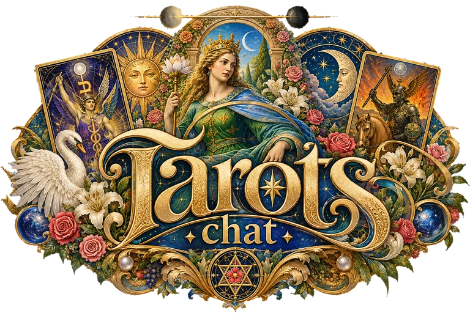

Thoth Tarot · Aleister Crowley

Online tarot reading with the Thoth Tarot and AI
The oracle of the Thoth Tarot, read by an artificial intelligence.
ASK
Write your question in your own words. A short interview makes it precise.
DRAW
Shuffle, cut and choose your cards. They are revealed one by one, each in its position.
READ
Every card is read with its Hebrew letter, Tree of Life path, element and astrology.